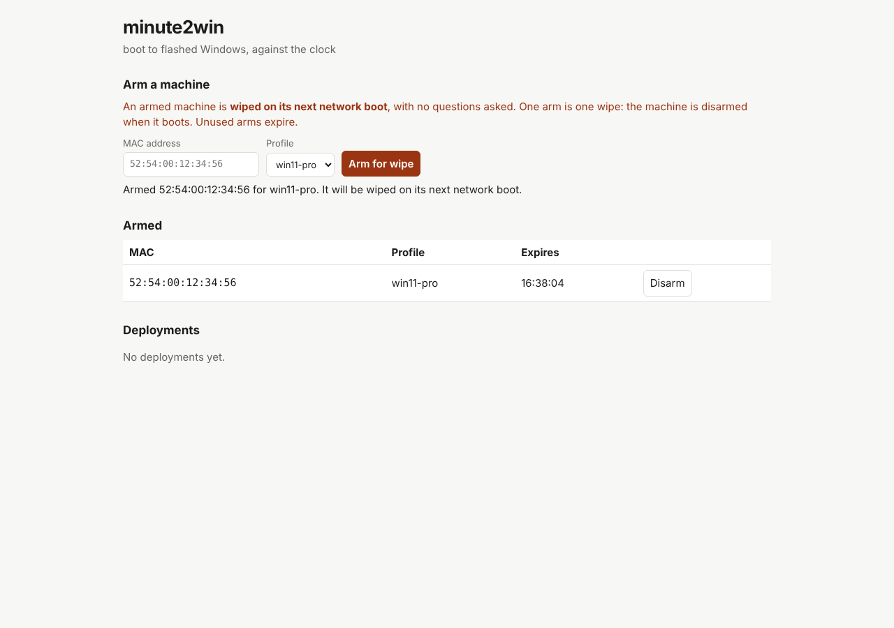
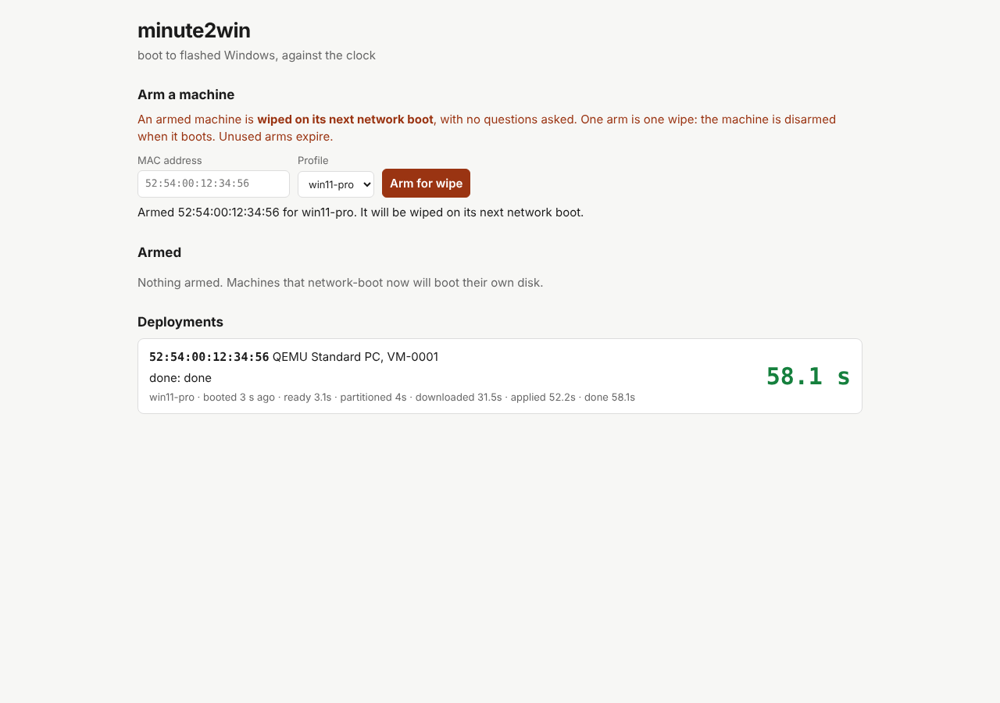

One binary, one web page
A single Go server with the web console and JSON API built in. Arm, disarm and watch deployments from a browser, including a phone.
Self-hosted Windows deployment
Type a MAC address, pick a profile, and that machine’s next network boot installs Windows from your own verified image.
minute2win is one small server with a web console, an iPXE boot chain and a WinPE engine. No USB stick, nobody at the keyboard while it images, and every phase lands on a live board.
Deployment erases the selected internal disk without a confirmation prompt. That is the point: arming a machine is the authorization to reimage it. Start with a disposable VM, use your own boot files and Windows image, and set M2W_TOKEN before the server is reachable from your network.
Seen working on one disposable UEFI VM, end to end. A Proxmox OVMF virtual machine booted through Windows-hosted PXE, imaged Windows 11 Pro, booted its new disk and reached OOBE, and the first-boot script ran on its own. Physical hardware and Secure Boot have not been tested yet.
Full verification recordWhat you get
For IT people who reimage the same kinds of machines again and again, and would rather run one binary than a deployment platform.
A single Go server with the web console and JSON API built in. Arm, disarm and watch deployments from a browser, including a phone.
An arm is used up when the machine asks for its boot script. Unarmed machines get no deployment and boot their own disk.
A manifest names the image URL, its exact hash, the edition and the disk needs. A wrong or corrupted download stops the deployment before Windows is applied.
Optional proxyDHCP and read-only TFTP that answer only armed machines, alongside your normal DHCP server. Your existing iPXE or USB route works too.
Lap times for each phase, live. Logs and timing.json are kept on the installed disk under C:\Windows\Logs\minute2win.
WinPE downloads the deployment engine at boot, so script updates do not need a new boot image unless its boot configuration changes.
Why bother
Reimaging is usually the same steps every time. minute2win turns them into a decision at your desk and a record you can read afterwards.
The console
One page: arm a machine, see what is armed, and follow each deployment phase by phase. It follows your light or dark setting and works at phone width.
These are demo screenshots from the automated UI test. The MAC address, the QEMU machine and the 58.1 s lap times are test fixtures, not a measured deployment.


Arm from the server room floor, then watch the board while you do something else. The UI test checks phone width in light and dark on every change.
How it works
You bring a licensed Windows image, WinPE from the Windows ADK, wimboot and iPXE. minute2win brings the console, the boot policy and the engine.
Enter its MAC address and a deployment profile in the console, or POST /api/armed. With M2W_TOKEN set, arming needs the token.
iPXE chains /boot/<mac>. An armed machine gets wimboot, WinPE and its manifest; the arm is consumed. Anything else is told to boot its own disk.
The engine checks, counts down, partitions, verifies, applies and reboots, reporting each phase. Windows Setup and a one-time first-boot script follow.
Logs survive the rebootArm MAC + profile → iPXE requests /boot/<mac> → arm consumed → wimboot loads WinPE + manifest → loader downloads engine → validate image and capacity → select disk → abort countdown → partition → download and verify SHA-256 → apply Windows → bcdboot → copy logs → reboot → Windows Setup → first-boot bootstrap
Safety
minute2win never asks “are you sure?” at the machine, because zero-touch means nobody is there to answer. The decision happens when you arm. Everything else is built so that an arm is the only way in, and most setup mistakes stop before the disk is touched. The exception is the image itself: its SHA-256 can only be checked once it is downloaded, after partitioning.
These guards do not replace checking which machine you arm.
Accepted risks and limitationsOnly an armed MAC gets a deployment script, and serving it uses up the arm. A machine that network boots again afterwards boots its disk.
An arm nobody boots expires (two hours by default), and no arm survives a server restart. Re-arm what you still want.
If the server cannot durably record that an arm was used, it does not deploy. If it cannot even restore its state, it refuses all boots and arms.
Manifest, image reachability and size, and disk capacity are checked first. A dead URL or a too-small disk leaves the machine as it was. A wrong hash or a corrupted download is caught only after partitioning and leaves the disk erased, so try each new profile on a VM first.
The lowest-numbered internal disk of at least 64 GB. Never USB or a file-backed virtual disk; SD and eMMC only after fixed disks.
The engine refuses to run outside WinPE or on non-UEFI firmware, and shows a ten-second countdown any key can abort.
Release 0.1.2 listens on every interface by default and the token is optional: without M2W_TOKEN, anyone who can reach the server, or any web page open in your browser, can arm a wipe. Set it, even on 127.0.0.1. Fixed in the source for the next release: loopback by default, no network listener without a token, and arming requests from other sites refused.
The static boot/minute2win.ipxe deploys on every boot that reaches it. Use it only behind a per-boot opt-in; prefer server arms. In the source it has no default host and boots nothing until you set m2w-base.
Know where it stands
Version 0.1.2 is for evaluation on machines you can afford to wipe. Every claim here comes from the public verification record.
Arm, boot, report and persistence rules are covered by Go tests, including native Windows runs. The console flow, phone width and light/dark are checked with Playwright.
UEFI proxy DHCP, shim/iPXE over TFTP, wimboot, automatic WinPE, partitioning, verified download, DISM apply, bcdboot, disk boot, OOBE and the automatic first-boot script, on one disposable Proxmox VM.
The Windows server is Authenticode-signed and timestamped in CI, and a release is never published unsigned. Linux archives and the AppImage are covered by SHA256SUMS.
Real firmware PXE, the port 4011 path, Secure Boot and multi-interface hosts. OEM product keys may skip the first-boot script.
Not implemented; use joinMethod: none and enroll separately. Windows images, WinPE, wimboot and iPXE are not included.
In release 0.1.2 the included profile and default URLs point at a restricted maintainer host; replace them with your own image, hash and boot files. The source has no default host: the server will not arm until -image-base and the profile point at yours.
The name is the goal, not a measurement. The target is network boot to flashed Windows in about a minute on an NVMe machine over 1 GbE. That has not been measured yet. The one recorded run, a 4 GB, two-core VM pulling an 8.16 GB image from a remote host, finished the engine in 359.4 s. Every phase is timed so the claim will be measured, never just asserted.
Try it
A loopback listener lets you inspect the console without serving boot scripts to any other machine. Deploying takes your own manifest, boot files and boot route: follow Getting started.
Linux
# the console only, on this machine
export M2W_TOKEN='replace-with-a-long-random-token'
./minute2win-server -listen 127.0.0.1:8080 -open=false
Windows PowerShell
$env:M2W_TOKEN = 'replace-with-a-long-random-token' .\minute2win-server.exe -listen 127.0.0.1:8080
Then open http://localhost:8080. Keep -listen explicit: release 0.1.2 otherwise listens on every interface. Ready for a real target? Getting started walks from a deployment profile and boot files to your first armed boot on a disposable VM.
Documentation
Setup, reference and the evidence behind every claim. All documentation
From an extracted release to a first armed boot on a disposable VM.
SetupBuild WinPE, stage boot files and choose a boot route.
ReferenceImage, disk, OOBE, guard and reporting settings.
ReferenceConsole flags, built-in PXE, TFTP and Windows hosting.
ReferenceRead state, arm and disarm from scripts.
When it failsBoot, network, image, persistence and bootstrap failures.
EvidenceWhat has been verified, how, and what has not.
ProjectSigned artifacts, checksums and verification.
Before you arm anything
It deploys only to a MAC address you armed, once, and only from WinPE on UEFI. On that machine it picks the lowest-numbered internal disk of at least the profile’s minimum size, never USB. If the machine has several internal disks, check which one that is before you arm it; a higher minimum size in the profile can rule out a smaller data disk. Arming the wrong MAC wipes the wrong machine: the guards cannot know your intent.
Not yet shown. One minute on NVMe over 1 GbE is the design target and the reason every phase is timed. The only recorded run so far, a small VM pulling a large image from a remote host, took about six minutes. The project will not claim a speed it has not measured.
No. The server runs on a Windows or Linux host on your network. Targets need nothing installed: they network boot, and WinPE fetches the engine.
No. You supply a licensed Windows image, WinPE built with the Windows ADK, wimboot, BCD, boot.sdi and iPXE binaries. Windows licensing stays your responsibility.
Not in this release. Joins are not implemented; the profile setting only logs that. Enroll machines with your existing process after deployment.
Both are unverified. The full chain has run on a virtual UEFI machine; physical firmware, Secure Boot with a signed shim, and OEM-key machines are the next validation milestones. See Status before deploying.
Free, MIT licensed, built in the open
Arm it, boot it, read the board. Then decide whether minute2win belongs on your network.